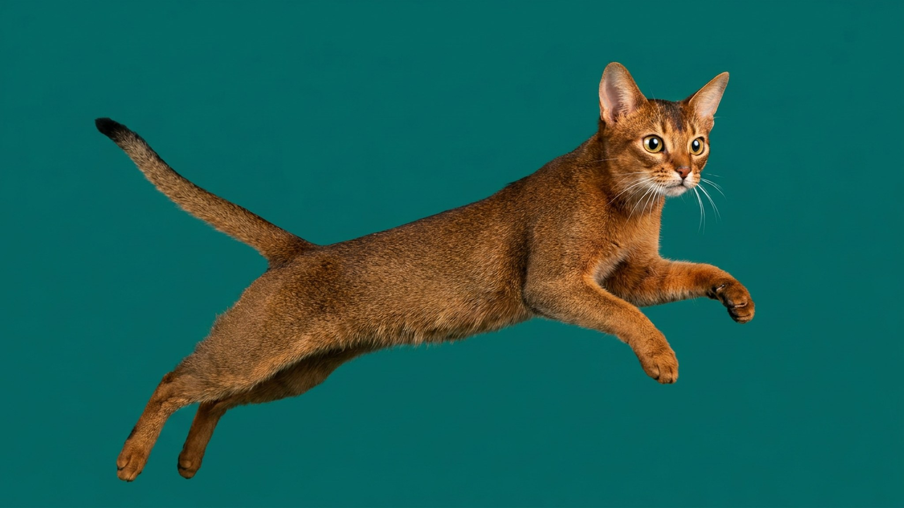

Пришли домой — абиссинская кошка уже на холодильнике. Спустилась, обследовала сумку, подёргала шнурок зарядки и теперь сидит на шкафу с видом человека, которому здесь скучно. Это не дефект характера — это рабочая порода в квартире без задачи. Абиссинскую кошку нередко называют «кошкой-обезьяной»: она думает вертикально, ей нужны высота, движение и новизна. Ниже — как это организовать и стоит ли заводить абиссинца, если вы часто вне дома.
🐾 Питомец ведёт себя странно?
AnimaLife расшифрует поведение кошки и собаки и подскажет, что делать. Попробуйте бесплатно прямо в мессенджере.
Абиссинская порода — одна из древнейших, с охотничьим и разведывательным прошлым. Селекция шла на любопытство, скорость реакции и способность самостоятельно принимать решения. В отличие от флегматичных пород, абиссинец не умеет «просто лежать» — он сканирует пространство, тестирует границы и ищет задачу.
Важная особенность: абиссинские кошки очень привязаны к хозяину и тяжело переносят одиночество. Им нужен не просто интерьер для исследования — им нужен партнёр по игре.
Кошка не скажет, что ей скучно — но поведение скажет:
Абиссинской кошке важна высота — она чувствует себя увереннее, когда может видеть комнату сверху. Несколько работающих решений:
Честно — нет, если речь о долгом одиночестве каждый день. Абиссинец переносит отсутствие хозяина хуже большинства пород: он социален, ему нужен контакт. Если рабочий день занимает 10–12 часов, стоит рассмотреть двух кошек — они будут компанией друг другу. Либо выбрать менее требовательную породу: британца, рэгдолла, норвежскую лесную.
Если вы дома большую часть дня или готовы выстроить активный распорядок — абиссинская кошка станет самым вовлечённым и живым питомцем, какого вы видели.
🐾 Здоровье питомца под контролем
AI-ветеринар, дневник здоровья и персональные советы для вашего питомца — установите AnimaLife бесплатно.
🐾 Понравился разбор?
Подпишитесь на канал — каждый день разбираем по одному тревожному симптому у кошек и собак: что в пределах нормы, а когда пора к врачу. Подпишитесь, чтобы не пропустить разбор, который может спасти здоровье вашего питомца.